Sobre mim
Meu nome é Júlia Alessandra, tenho 17 anos e sou aluna do 2° ano de tecnico em informatica no CEFET-MG.
Gosto de ler livros de aventura e ouvir música enquanto faço qualquer coisa, minha
linguagem de programação favorita é Java Script e eu pretendo trabalhar com front end.
Trabalho bem em equipe e aprendo a usar novas tecnologias com facilidade. Participo da equipe de
robotica TrincaBotz na área da gestão.
Por que estou me candidatando
Eu estou bem ansiosa com esse projeto desde que o professor disse que iria fazer, acredito que é
uma oportunidade para eu ganhar mais conhecimento nessa área e em python, que é uma linguagem bastante
interessante e atual.
Também estou interessada em usar esse projeto como horas de estágio obrigatorias que são necessarias
para eu me formar
Expectativas
Eu tenho a expectativa de aprender Python e Django e apliar meus conhecimentos sobre web. Participar de um projeto de programação em equipe será uma boa prévia de como é em um emprego da vida real, acho importante entender como é a dinâmica para me preparar para o futuro próximo
 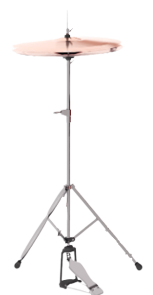
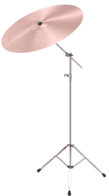
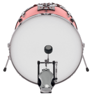
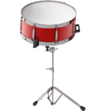
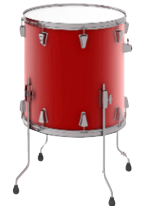
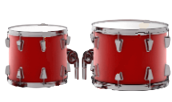
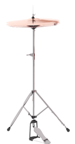
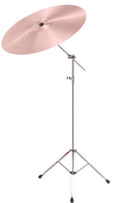
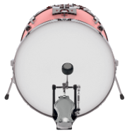
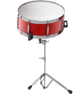
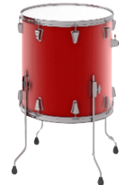
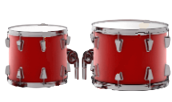
Ouvir cover de Daisy Jones enquanto a série não sai
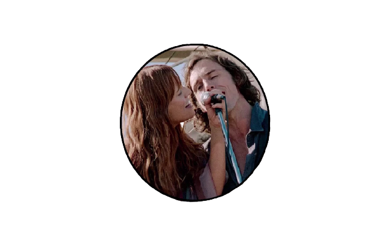